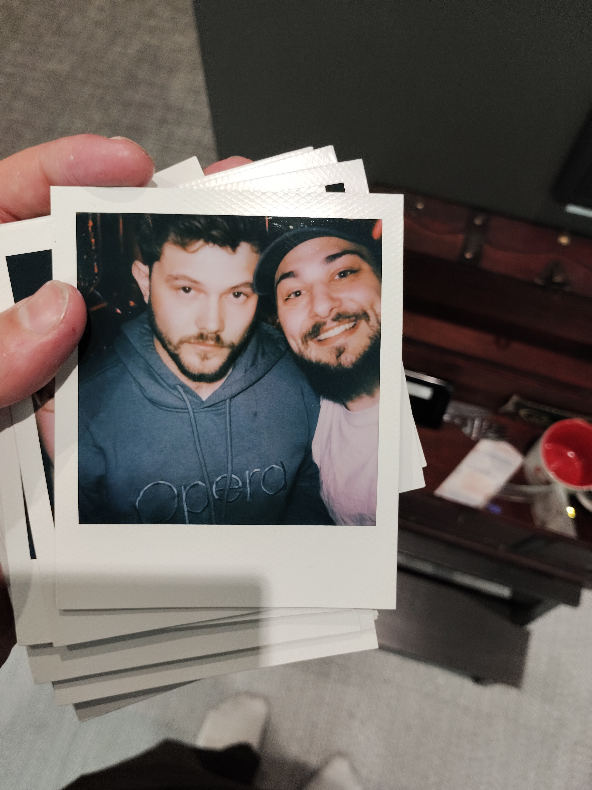
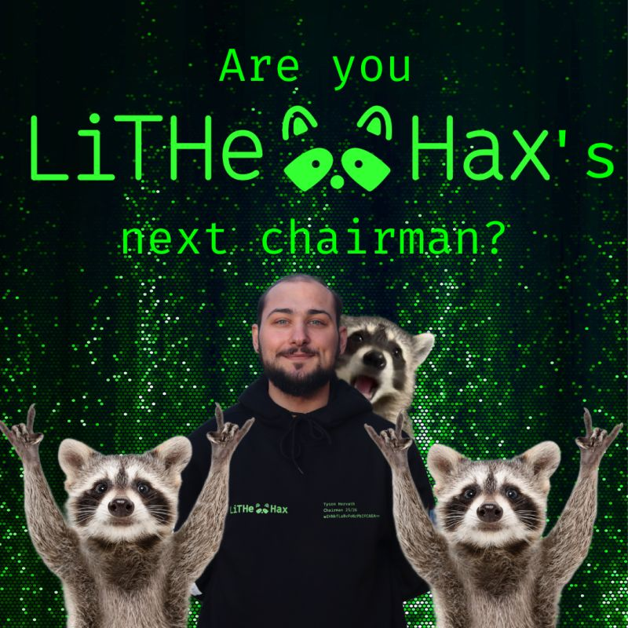
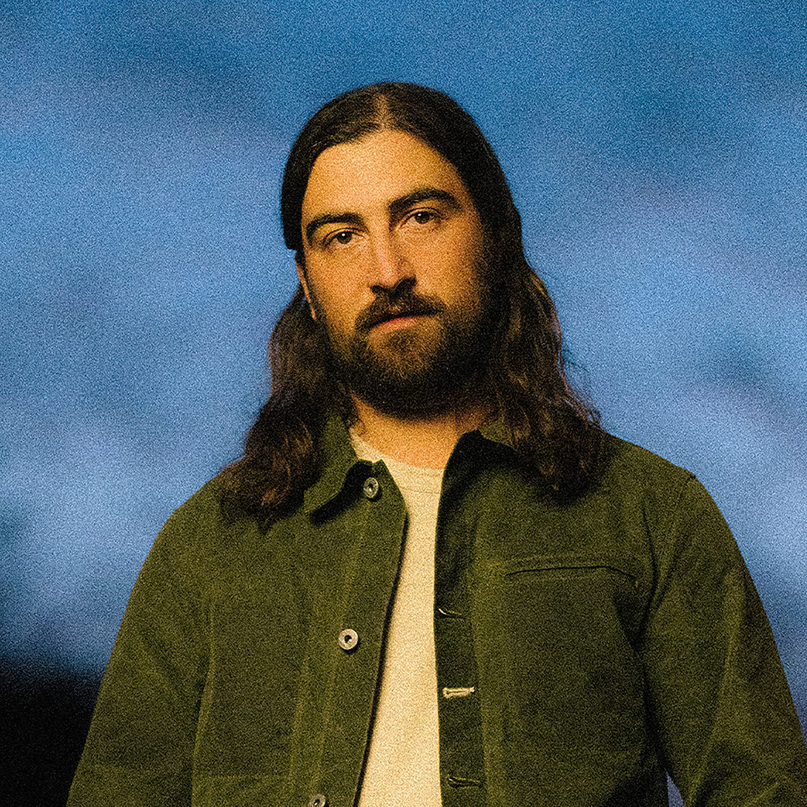
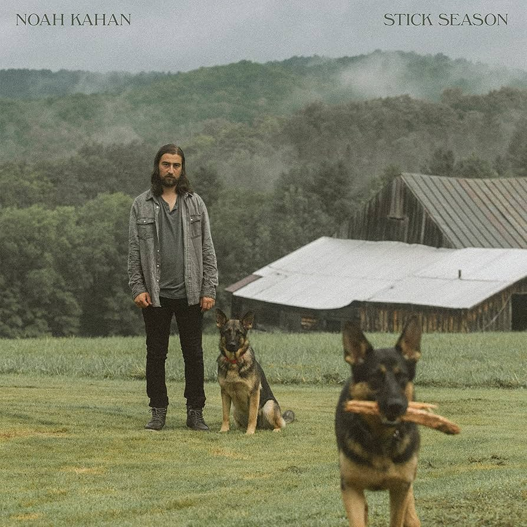
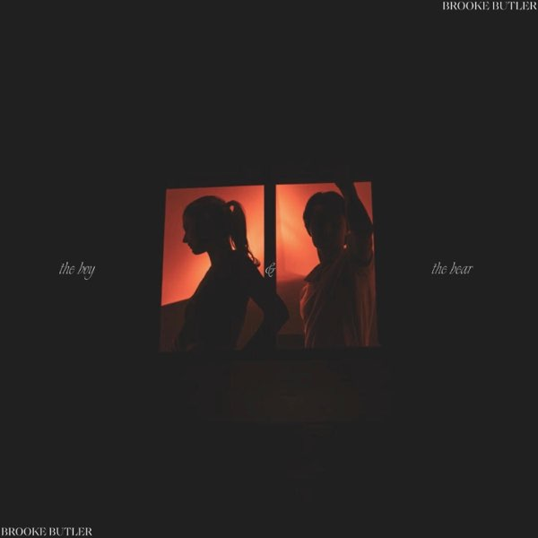
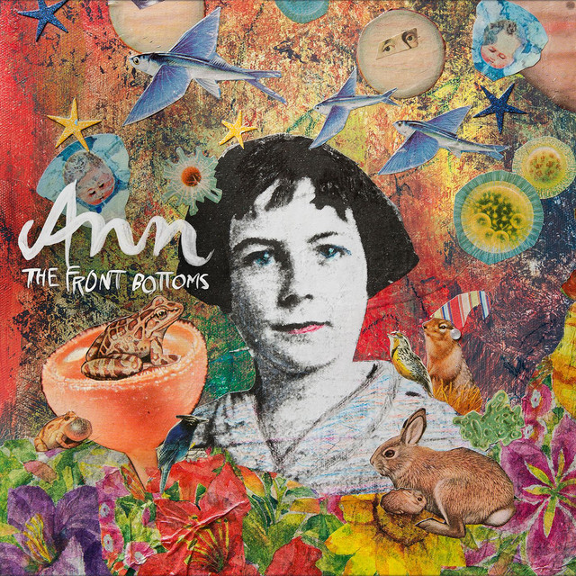

what are you doing?
this is a now page. if you have your own site, you should make one too!
my life is often busy, and i've been somewhat secretive when sharing details with family and friends. i thought this would be a great way to keep everyone updated on what i'm currently doing. i'll do my best to keep this page updated with any new happenings. thank you, Phillip Ridlen, for inspiring me with your now page!
this is what i'm doing as of 30th april 2026
‣ see what i have been up to previously
life 🌟

i know i said i was partying a lot last month and was going to tone it down, but this month has actually involved even more partying. now i feel done partying. even though it has been fun, and i have been hanging out a lot with my friends and built stronger relationships, i have not been feeling great mentally or physically. though, a few months back, i started going to a psychologist, which has been a good thing for me. i would recommend everyone doing that, no matter their mental state.
work 💼
Opera Software
our office turned 10 years old at the end of this month, so we had a celebration at the office. a lot of the party was centered around the old office and its history. it was super interesting seeing old photos of colleagues and hearing fun stories. besides that, i have been continuing work on reusable kyc, virtual cards, and our new activity history implementation. it has been pretty stressful, to be honest, because it's more complicated than the stuff i usually do, which has been fun, but it's also taking a lot more time to understand. there are also a bunch of other companies involved, which complicates communication. also, we're ramping up our ai usage, which complicates things even more, imo. besides that, our project is now listed on our bug bounty platform. we will see how that affects our daily work, if at all.
organizations 🏢
LiTHe Hax

we have held our last event, where i showed how to hack a security camera. besides that, we are wrapping up. we're gonna have our annual meeting next month, and i'll hand over the organization to the new board. i feel positive that we'll be able to find enough people to have a complete board. i feel positive in general about the future of this organization. now we are mostly having some team-building activities coming up and writing our testimonials that are gonna be handed over to the next board. a lot of great people have shown interest in joining the organization. i'll post a last, probably longer section about LiTHe Hax next month.
LiTHanian
we just finished the articles for our last issue. we have been writing critical articles about organizations connected to the university, and hopefully they'll trigger reactions that will make people act on things. now what is left is layout and graphical work. after that, i'll be focusing on handing over the organization to a new editor in chief, if we manage to find one. i'm hopeful. one person i know has been showing interest, and hopefully i will manage to convince her. it would be a bummer if the magazine died, since it has been running since the 70s. but times are changing for physical magazines, sadly... it's getting tougher economically...
hobbies ⚙️
programming
i have not been programming as actively lately, as i haven't had very much spare time to do so. but i have been starting a "new" project with one of my close friends, parslie. we are making a geosocial app called outstanding, and it is on github. currently, we are in an early phase, though i hope it will turn out to be a long-term project. we actually made the first version of the app when we were in university for a course. then my friend made a new version later as a hobby project, and now we are picking it up again. i've also been working on some stuff related to the lithe hax website. among other things, we'll add a photo album section.
music
songs played
1720 plays
daily average
57 plays
biggest listening day
apr 24th with 143 plays
top artist

Noah Kahan
top album

Stick Season by Noah Kahan
top song

The boy & The bear by Brooke Butler
last played

Pale Beneath the Tan (Squeeze) by The Front Bottoms
expert progress 🎓
the concept of reaching 10,000 hours to become a professional or an expert in a field is derived from Malcolm Gladwell's book "Outliers: The Story of Success". gladwell popularized the idea that achieving a high level of proficiency in any field typically requires about 10,000 hours of dedicated practice. this notion is based on the research of psychologist Anders Ericsson, who studied the practice habits of elite performers in various domains.